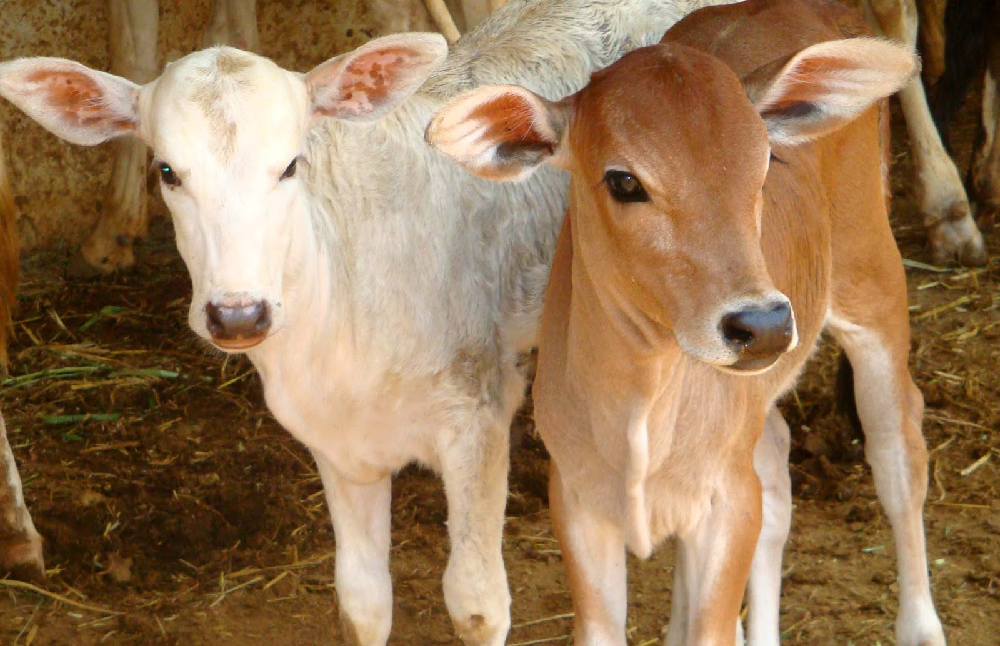
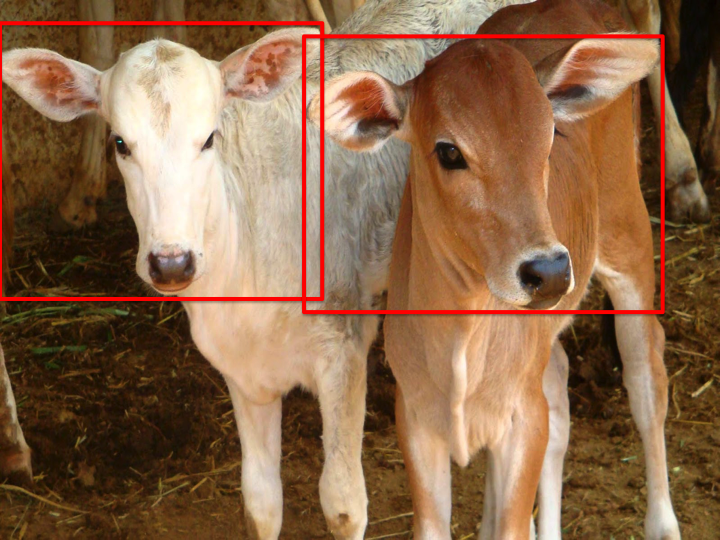
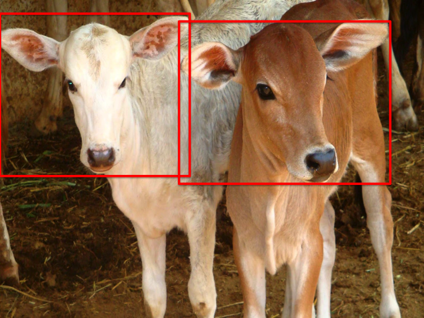

Description
This project is one of the computer vision components of Mobility Assistant for Visually Impaired (MAVI). It is in collaboration with the Indian Institute of Technology, Delhi (IITD). It aims at using the techniques of Computer Vision and Deep Learning to detect animals in an uncontrolled, outdoor environment. The primary focus is on detecting cows and dogs. The final product will be a wearable device with all the components working together to assist outdoor navigation. All the modules have been ported to ZedBoard for testing. ZedBoard comes with a 2-core ARM processor.
Input
Image of size 640 * 480 are given as input to the animal detection module.
Output
A bounding box around cows and dogs, as detected in the input frame.
Example

 

Sample image Output
HoG + Linear SVM results
1. Frontal view classifier
| TP | TN | FP | FN |
|---|---|---|---|
| 84935 | 279753 | 7607 | 8356 |
| Accuracy: 92.06% | Precision: 91.77% | Recall: 91.04% |
2. Side view classifier
| TP | TN | FP | FN |
|---|---|---|---|
| 80238 | 150634 | 7599 | 5424 |
| Accuracy: 93.67% | Precision: 91.34% | Recall: 93.66% |
Faster RCNN
Faster RCNN gives an accuracy of 57.8%. It's because it's trained on VOC dataset and that doesn't capture Indian context. Next step: Fine-tuning faster RCNN with our own dataset.